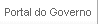
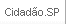
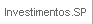

Destaques
SP Notícias
Poupatempo
Acessa São Paulo
Licitações
---------------------------------
Secretarias:
- Administração Penitenciária
- Agricultura e Abastecimento
- Assistência e Desenvolvimento Social
- Casa Civil
- Casa Militar
- Comunicação
- Cultura
- Desenvolvimento
- Economia e Planejamento
- Educação
- Emprego e Relações do Trabalho
- Ensino Superior
- Esporte e Lazer
- Fazenda
- Gestão Pública
- Habitação
- Justiça e Defesa da Cidadania
- Meio Ambiente
- Procuradoria Geral do Estado
- Relações Institucionais
- Saneamento e Energia
- Saúde
- Segurança Pública
- Transportes
- Transportes Metropolitanos
Portal do Governo. A página abrirá em outra janela.
São Paulo Notícias. A página abrirá em outra janela.
Portal do Cidadão. A página abrirá em outra janela.
Poupatempo. A página abrirá em outra janela.
Acessa São Paulo. A página abrirá em outra janela.
Licitações. A página abrirá em outra janela.
Investimentos em São Paulo. A página abrirá em outra janela.